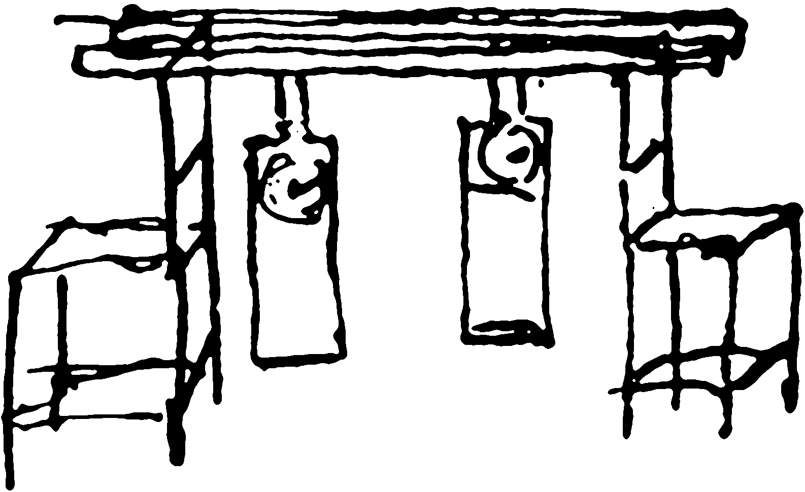
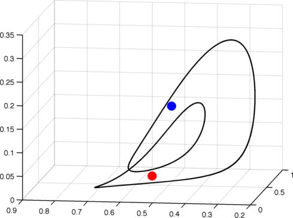
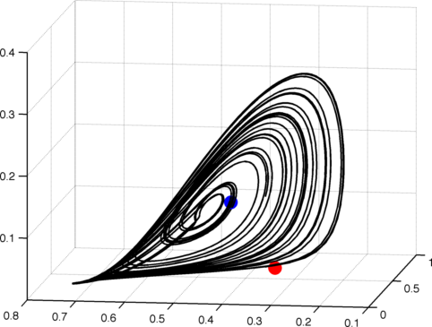

| The first scientific account of the
synchronized motion is due to the Dutch scientist Christiaan Huyghens.
In 1665, the physicist lay ill in bed, watching the motions of two
pendulum clocks he had built. To his surprise, he detected an “odd kind of sympathy” between the clocks: regardless of their initial state, the two pendulums soon adopted the same rhythm, one moving left as the other swung right. Elated, Huygens announced his finding at a special session of the Royal Society of London, attributing this synchrony to tiny forces transmitted between the clocks by the wooden beam from which they were suspended. In 1960s, Arthur Winfree, a theoretical biologist began to study coupled oscillators occurring in Biological systems. Since then the interest in the study of synchronization has not decayed. |
 |
I am interested in the synchronization features observed in the case of spatially extended dynamical systems (i.e. modelled by partial differential equations). For this project I often collaborate with Dr. Stefano Boccaletti. Current interests lay in the analysis of synchronization in complex networks.
The coupling of two identical chaotic systems can lead to very interesting and surprising phenomenon. One of which is called chaos suppression. It can be detected by monitoring the maximum Lyapunov exponent of the coupled system. It is illustrated in the figures below for the particular case of two coupled chaotic Lotka-Volterra systems (Prey-Predator system). More details of this study can be found in this publication of Chaos 17(4), (2007).
| Map of Maximum Lyapunov exponent of two coupled chaotic Lotka-Volterra systems (Prey-Predator). The coupling strength ε (vertical axe) and the asymmetry θ (horizontal axe) are the important parameters. | Zoom of the area marked in green in the left figure showing intricate interlaced chaotic and periodic regions. |
θ=0; ε=0 |
θ=0; ε=0.06 |
θ=0.1; ε=0.1 |
|  |  | |
| The two sub-systems are uncoupled and the dynamics is chaotic. | The coupling is such that the chaotic dynamics is destroyed. The coupled system is periodic. | The two sub-systems are completely synchronized. However the overall dynamics is chaotic. |
{kind=link}